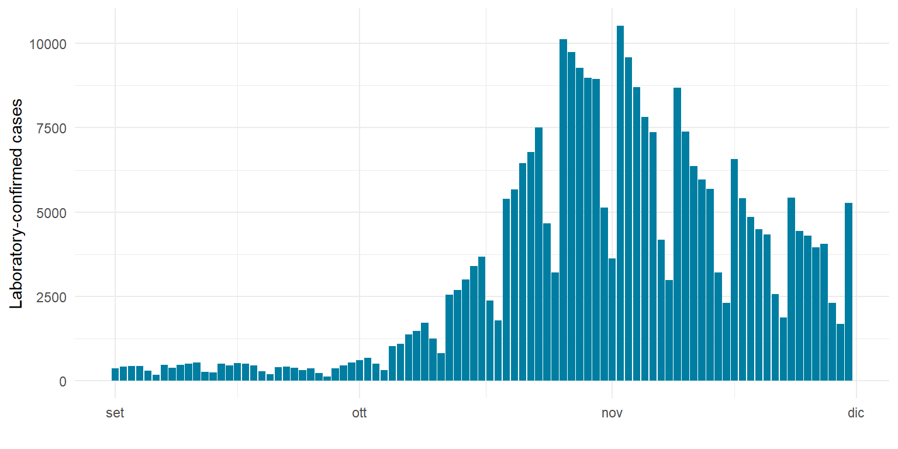

Code
#install.packages("unibeCols")#install.packages("unibeCols")Quarto enables you to weave together content and executable code into a finished document. To learn more about Quarto see https://quarto.org.
When you click the Render button a document will be generated that includes both content and the output of embedded code. You can embed code like this:
library(here)here() starts at C:/Users/Demetrio/OneDrive - Università Commerciale Luigi Bocconi/Desktop/Chiavetta/PHD doc/Corsi PhD Berna/Corsi 2024/Course in R/My-First-R-projectlibrary(tidyverse)── Attaching core tidyverse packages ──────────────────────── tidyverse 2.0.0 ──
✔ dplyr 1.1.4 ✔ readr 2.1.5
✔ forcats 1.0.0 ✔ stringr 1.5.1
✔ ggplot2 3.5.0 ✔ tibble 3.2.1
✔ lubridate 1.9.3 ✔ tidyr 1.3.1
✔ purrr 1.0.2 ── Conflicts ────────────────────────────────────────── tidyverse_conflicts() ──
✖ dplyr::filter() masks stats::filter()
✖ dplyr::lag() masks stats::lag()
ℹ Use the conflicted package (<http://conflicted.r-lib.org/>) to force all conflicts to become errorslibrary(lubridate)
library(unibeCols)The aim of this exercise is to visualize the increase in laboratory-confirmed cases of COVID-19 in Switzerland during autumn 2020
We read and process the data of laboratory-confirmed cases og Covid-19 in Switzerland as reported by [Federal OFfice of Public HEalth (http://https://idd.bag.admin.ch/)]
# Read data
cases <- read_csv(here("data/raw/COVID19Cases_geoRegion.csv"))#Process data
region <- "CH"
window_start <- ymd("2020-09-01")
window_end <- ymd("2020-11-30")
cases <- cases |>
filter(geoRegion == region & datum >= window_start & datum <= window_end) |>
select(datum, entries)
cases Figure 1 shows the number of lavorairy.confirmed cases of COVID-19 in Switzerland from r window_start` to 2020-11-30.
ggplot(cases, aes(x = datum, y = entries)) +
geom_bar(stat = "identity", fill = unibeSaphire()) +
labs(x = "",
y = "Laboratory-confirmed cases") +
theme_minimal()
##Conclusions
The number of laboratory-confirmed cases